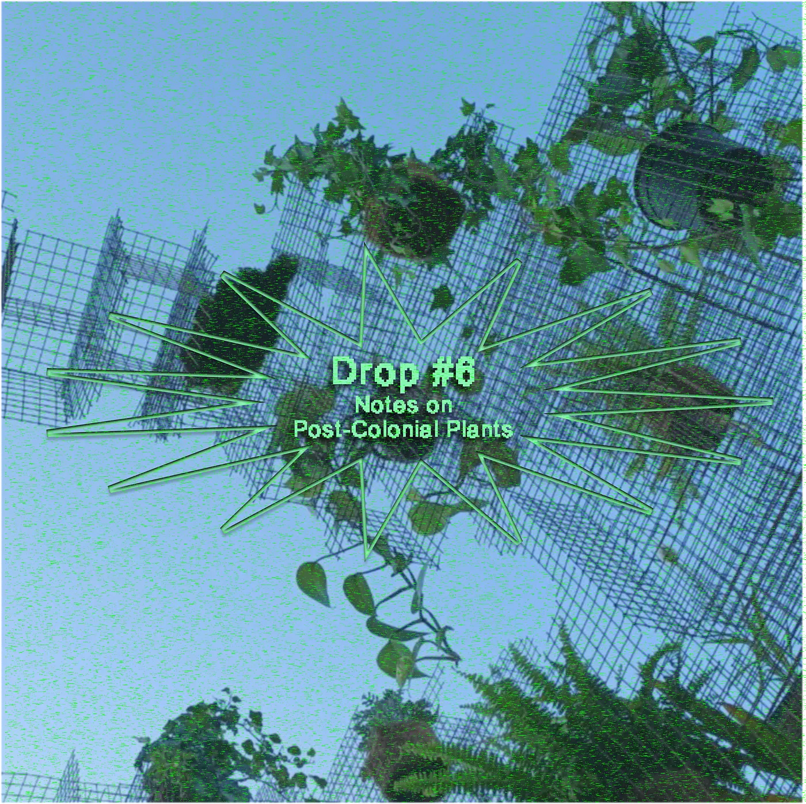
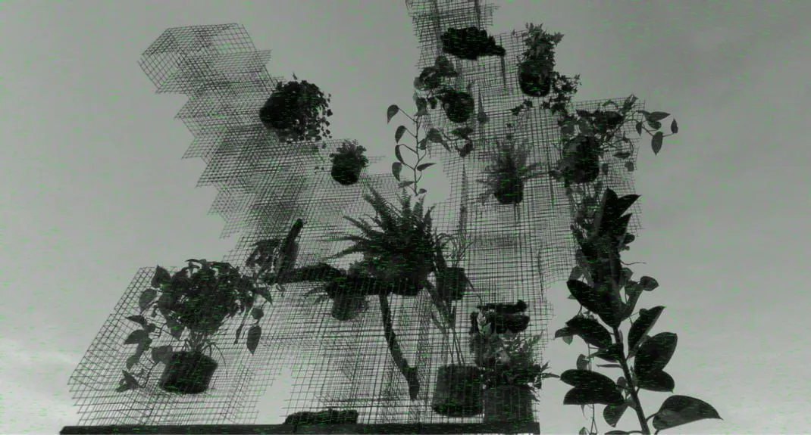
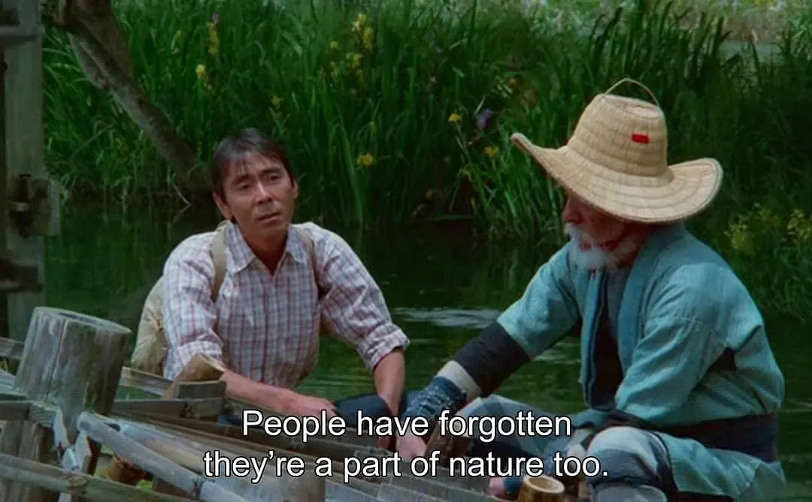
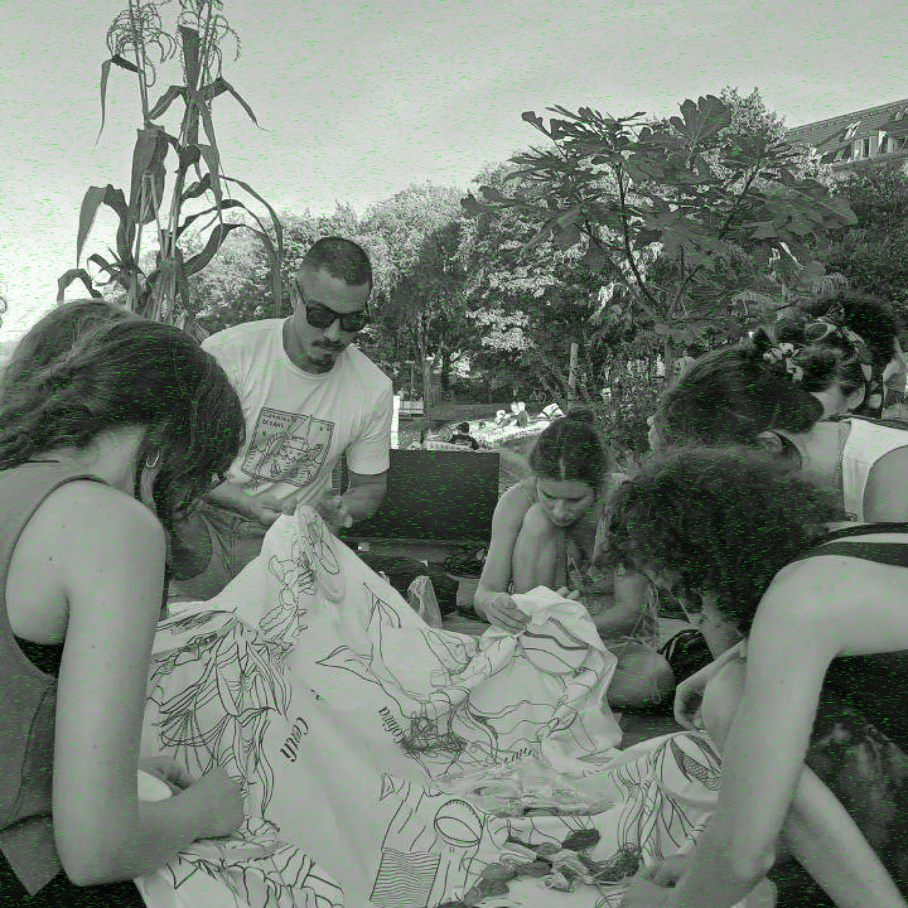

On a Berlin experience of cosmic interweaving
Drop #6 · September 26, 2023 · 7 min read
Hey everyone (▰˘◡˘▰)
Today, we share a report from a special performance we participated in Berlin some time ago and resonated with what we do. We like to use this space as a spotlight for other fascinating realities that foster our milieu. This is a first attempt. This also marks the first DROP written by Anna. Yu-uh.

One cannot separate the plant—neither physically nor metaphysically—from the world that accommodates it. It is the most intense, radical, and paradigmatic form of being in the world. To interrogate plants means to understand what it means to be in the world. Plants embody the most direct and elementary connection that life can establish with the world. The opposite is equally true: the plant is the purest observer when it comes to contemplating the world in its totality. Under the sun or under the clouds, mixing with water and wind, their life is an endless cosmic contemplation, one that does not distinguish between objects and substances—or, to put differently, one that accepts all their nuances to the point of melting with the world, to the point of coinciding with its very substance. We will never be able to understand a plant unless we have understood what the world is.
Emanuele Coccia, The Life of Plants
At the beginning of September in Berlin, Urbane Praxis e.V. hosted the “Praxis Week” with the theme “Own your city!”. It was a week filled with artistic and activist interventions all over Berlin, aimed at asserting the right to shape and use the city we live according to our values and actions.
The artistic interventions during the week began with a set of questions that activists and artists sought to answer in their unique ways. Who owns the streets in our neighborhoods? Who claims ownership of the parks we stroll through? What activities are permitted in public spaces, and who holds the authority to determine their design and use?
In the context of the festival, we ended up participating in Studio Neotropico collective's workshop: the experience was a delightful surprise, a gift of peace and reflection. Through their practice, the collective breathed new life into both the Landwerskanal, the beloved canal in Kreuzberg, and the art of embroidery.
But let's proceed in order. Studio Neotropico, as you can discover on their website, is:
A project initiative of migrant artists and researchers working at the intersection of visual arts and science. We understand our practice as an artistic bridge that emerges between human and non-human actors, where intercultural and interdisciplinary projects are generated.
We met its founders, Valentina Buitrago (curator and researcher) and Garcia Charles Gonzalez Bernal (multidisciplinary artist), both from Colombia. Their work brought a piece of their homeland to Berlin, delving into the colonial history of the Amazon, all to decolonize its representation.
The workshop took place on a floating platform situated in the Landwerks Canal. This wooden platform hosted an installation where living plants and sounds converged with the inhabitants of Berlin and their urban environment. Visitors could engage with the installation, which hung above them, offering a visual, physical, and auditory experience: ambient sounds propagated through the boat and the waves. The installation created a pedestal, offering a post-anthropocentric oasis in the urban flow. Within it, the visitors, us, were reminded of the bubbling, green aliveness surrounding the concrete buildings and the U-Bahn rails.

The platform felt like an attempt to reveal the essence of plant life, the forgotten importance of their intrinsic value as living entities of their own. Indeed, as explained in this touching extract from The Ends of the World by Viveiros de Castro and Danowski), we often forget about the humanity of other beings, where humanity here is intended as being alive. According to the authors, plants and animals possess their own form of humanity, which is intrinsic to their existence. In encounters between species, one often imposes its own concept of humanity upon the other, causing the latter to forget its own humanity.
Every existent being in the cosmos thus sees itself as a human, but does not see other species in the same way. (Needless to say, this also applies to our own species.) ‘Humanity’ is therefore at once a universal condition and strictly dietic, self-referential perspective. Different species cannot occupy the point of view of ‘I’ simultaneously, owing to deictic restrictions; in every confrontation here and now between two species, it is inevitable that one will finish by imposing its humanity on the other, that is, that it will finish by making the other ‘forget’ its own humanity. This entails that we humans (Amerindian humans, that is) do not see animals as humans. They are not human for us; but we know that they are humans for themselves. We know just as well that we are not humans for them … Like all human beings – or more precisely: like all animals – Amerindians must eat or in some way destroy other forms of life in order to live. They know that human action inevitably leaves an ecological footprint. Differently to us, however, the ground on which they leave their footprints is equally alive and alert.
Similarly, in the urban environment, plants occupy a secondary position. They are shrunk between concrete, sometimes making space for themselves, but often are removed and treated like weeds. In our cities, "nature" is assigned to a predefined, confined space enclosed within parks or designated green areas and not allowed to thrive beyond those boundaries. This compartmentalization of nature within metropolitan landscapes underscores the dominance of the human perspective, symbolized by the "I," while the plants’ humanity - their essence - is largely ignored. The potential for a profound interdependence and coexistence between plants and human beings remains unexplored: we live in an unfolding climate disaster, yet, our governments opt for dull choices in terms of overbuilding and uncontrolled development (as the recent news about Berlin sadly shows).

In other words, the opportunity to create more harmonious and sustainable urban ecosystems where humans and plants can mutually benefit from their reciprocal presence is often missing.
Neotropico’s installation serves as a powerful reminder of the fundamental importance of nature and the need to rethink our cities in a more harmonious and equilibrate co-existence with nature. In times of climate crisis, this necessity is widely perceived and announced. But how to do this?
Beneath the installation, we immersed ourselves in a collective embroidery practice, forging a connection with the plants. A substantial piece of fabric laid at the center of the platform, featuring the silhouettes of some Amazonian plants, identified not by the names imposed by European colonizers, but by the pre-existing indigenous name, to reflect on power hierarchies that lay behind plants' taxonomy. The imperialist plant classification system, whose pioneer is Carl Linnaeus, considered the “father of taxonomy”, is still in use today, although with some minor changes. This taxonomy system assigns each species a distinctive two-part name, starting with a broader genus category followed by a unique species name.
Neotropico collective emphasizes another legacy of European colonialism: the nomenclature for the species, which overpasses the fact that “for the Indigenous People, the name in its vernacular form may also embody history, a sense of place and a right to belong”. Europeans blatantly ignored the names and meanings given by the local communities of the territories where the plants were originally from.
By revealing this act of nominal colonization, participants were exposed to the violence of their own language. The setting in which this operation took place made it even more urgent.

Seated on the wooden platform, people from around the world could come together in the art of embroidering the silhouette of these plants and reflecting on power hierarchies still in place today. Using the collective’s words: “The workshop allowed participants to reflect on colonial hierarchies by looking to create a space for exchange between migrant and non-migrant bodies.”
Studio Neotropico re-enchanted the Berlin urban landscape for one afternoon by injecting new values through a collective urban intervention.
Within it art transcended its mere aesthetic role, embracing its social and political dimensions. Deconstructing and rebuilding knowledge is a process that must involve different actors within the community, as well as various approaches. Studio Neotropico's work offered a platform for dialogue, collaboration, and the re-evaluation of our imperialistic cultural and ecological knowledge. On that platform on Landswerkkanal, communities, knowledge, plants from the ancient past, and our present were all weaved together.